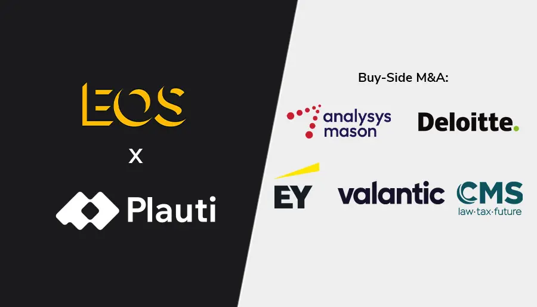

Projects

EOS Partners, a German private equity company, has acquired a majority stake in Dutch software vendor Plauti. Founded in 2011, Plauti is a provider of data quality management software for Salesforce and Microsoft Dynamics 365. The company helps its clients – mostly enterprise and mid-market clients – ensure reliable and compliant data across their CRM environments. With the financial backing of EOS Partners, Plauti aims to accelerate its growth through a combination of organic initiatives and a focused buy-and-build strategy. Strategic priorities include investing in offerings and product innovation, the acceleration of international expansion, and expanding its position across the Salesforce and Microsoft Dynamics 365 ecosystems. Commenting on the deal, Sten Ebenau, founder of Plauti, said: “It was important to find someone who could help amplify Plauti’s strong growth momentum while staying true to our culture and values. EOS Partners brings a long-term mindset and deep expertise, and will support us in scaling internationally.” Headquartered in Munich, EOS Partners is a mid-market investor focused on fast-growing companies in Western Europe. Financial terms and conditions of the Plauti deal have not been disclosed. Buyer EOS Partners was advised during the transaction by Analysys Mason, Deloitte, EY, Valantic, and law firm CMS. Commenting on the deal, Simon Fischer, partner at Analysys Mason, said: “We congratulate EOS Partners and Plauti on their successful partnership, which we believe will further strengthen their product innovation and accelerate international expansion across the Salesforce and Microsoft Dynamics 365 ecosystems. It also represents a strong signal of German private equity’s ability to invest across Europe.”